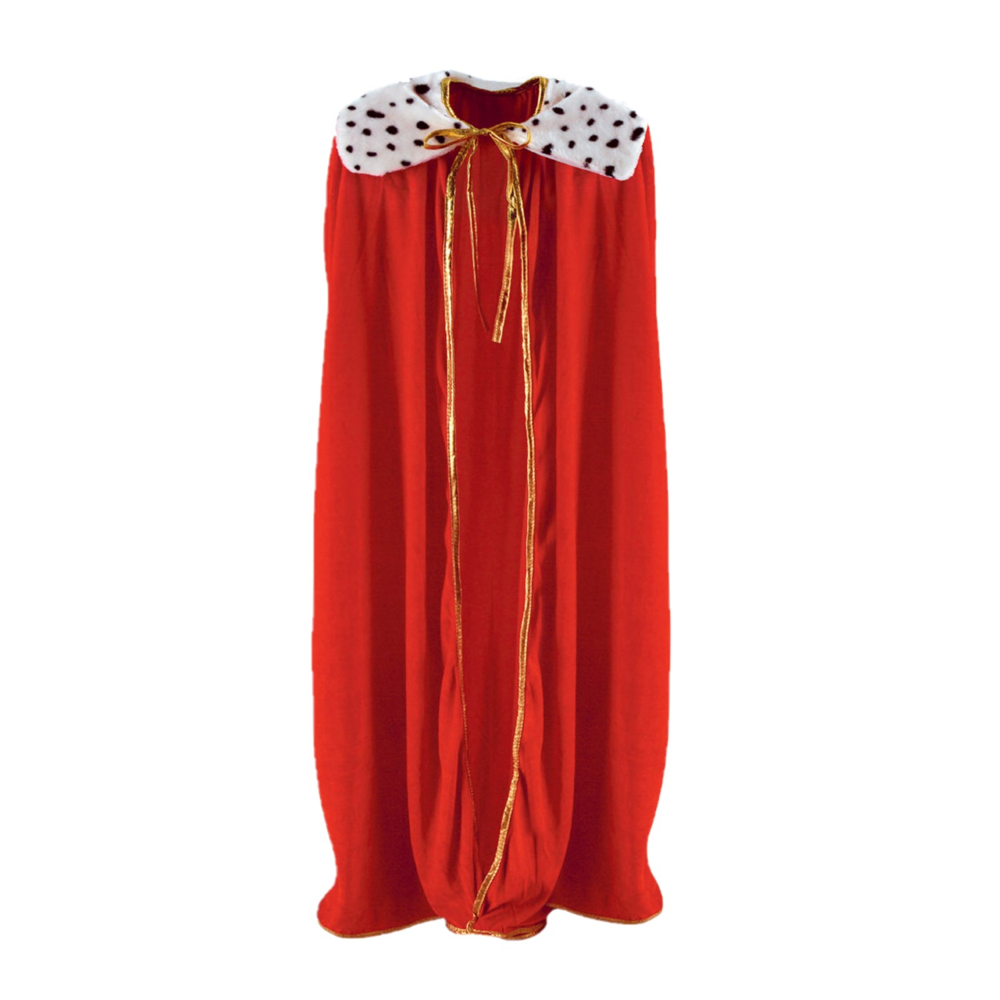
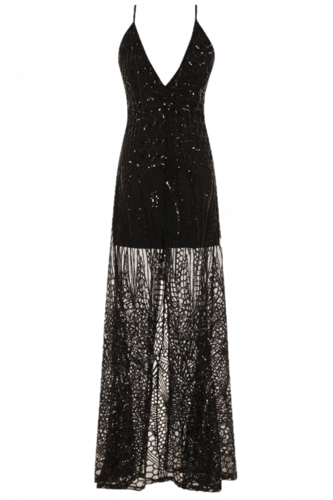

This is my project on elements in queer pop culture, and interpreting them through sound. I started this project with the mindset that certain types of music or sound appealed to us in the LGBTQIA+ community. However, I came to realize that queer music and queer pop culture has historically merged across all genres of music. LGBTQIA music spans across all genres of music, and is honestly dependent on the identity of the artist, and how the music appeals to the community. Navigating LGBTQIA identity is complicated, as we are told what categories and archetypes to fit into. This is my personal statement on merging LGBTQIA interests across genres. Try merging sounds together to try to fit in, or to be completely chaotic and unique!
 